VIDEOCONFERÊNCIA
Netglobe
Um site que construí do zero em constante evolução
Minha atuação
Construí todo o site institucional da Netglobe do zero, da estrutura das páginas à implementação das funcionalidades. É um projeto completo que atualmente possui 42 páginas, estrutura 100% responsiva e foco em performance, SEO, GEO, acessibilidade, usabilidade e uma boa experiência do usuário. Continuo responsável pelo desenvolvimento e pela evolução do site, acompanhando as necessidades da empresa.
Do WordPress ao desenvolvimento sob medida
Quando entrei na Netglobe, o site da empresa utilizava WordPress com Elementor. Minha atuação inicial foi corrigir diversos erros que comprometiam seu funcionamento. A partir dessa experiência, propus a reconstrução do site com desenvolvimento próprio em HTML, CSS, JavaScript e PHP, para ampliar o controle sobre a estrutura, as funcionalidades e o desempenho.
Com essa proposta, desenvolvi um novo site com excelente desempenho e uma estrutura alinhada às necessidades da empresa. A reconstrução solucionou os problemas enfrentados na versão anterior e trouxe mais autonomia para personalizar a experiência e evoluir o projeto.
Páginas e experiências
Desenvolvo páginas para eventos, soluções, blogs e landing pages. Estou sempre atualizando os destaques do blog e o slider da home, mantendo o conteúdo alinhado às novidades da Netglobe.
O site conta com animações fluidas, efeitos de hover marcantes e recursos personalizados que desenvolvi para tornar a navegação mais moderna e intuitiva.
Acessibilidade em evolução
Priorizo a acessibilidade nas melhorias contínuas do site, incluindo a navegação pelo teclado com a tecla Tab para percorrer links, botões e campos de formulário. Esse cuidado acompanha o desenvolvimento das páginas e das interações, buscando facilitar o acesso aos conteúdos e aos canais de contato.
Também estamos usando o plugin VLibras como um recurso adicional de acessibilidade no site da Netglobe.
Desenvolvimento
Implementei a estrutura e as interações do site com HTML, CSS, JavaScript e PHP. No trabalho contínuo, desenvolvo novas funcionalidades, novas páginas, cuido da organização do código e aplico otimizações de SEO e GEO.
Dados e estratégias digitais
Uso o Google Analytics e o Google Search Console para monitorar o desempenho do site e realizo campanhas de anúncios para atrair mais visitantes. Também utilizo o RD Station Marketing e o RD Station CRM integrados aos formulários do site para receber e gerenciar os contatos. Sou responsável pela administração de todas essas ferramentas, campanhas e integrações.
Realizo o acompanhamento dos dados do site, a análise de desempenho, a geração de relatórios e o monitoramento de campanhas. Também apoio a criação e a otimização de estratégias digitais, usando os dados para orientar melhorias contínuas.
Explore o projeto
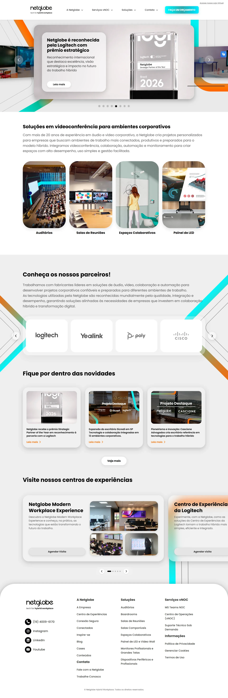
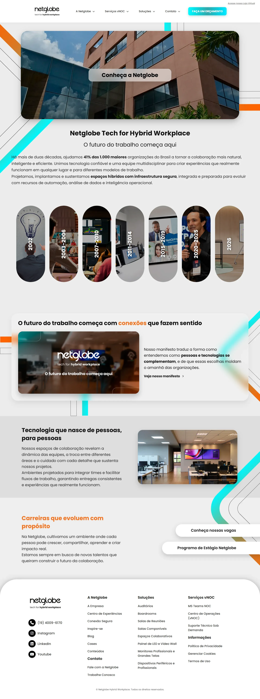
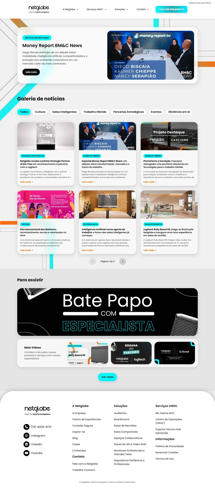
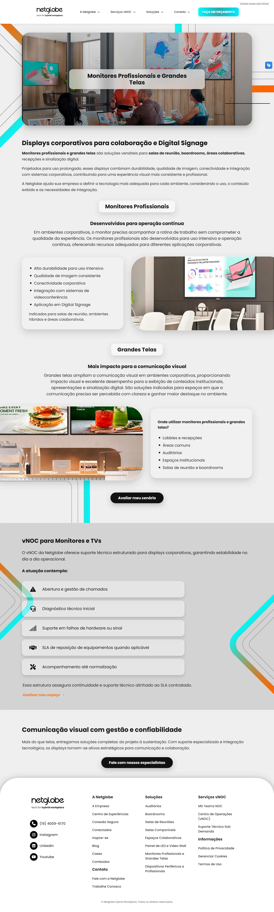
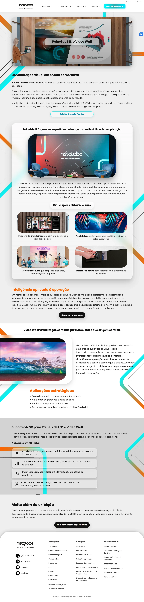
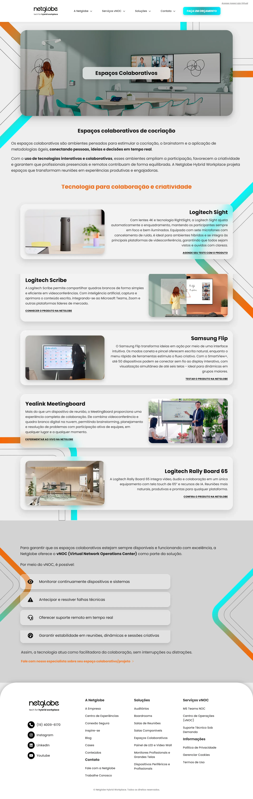
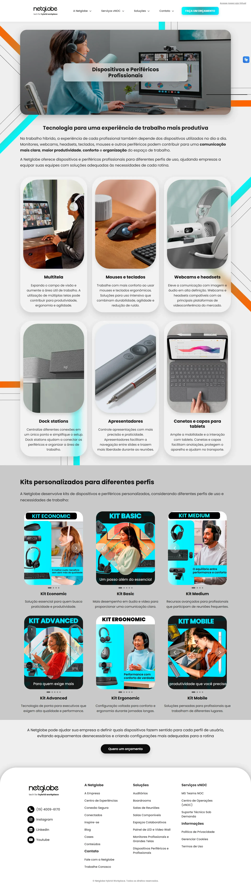
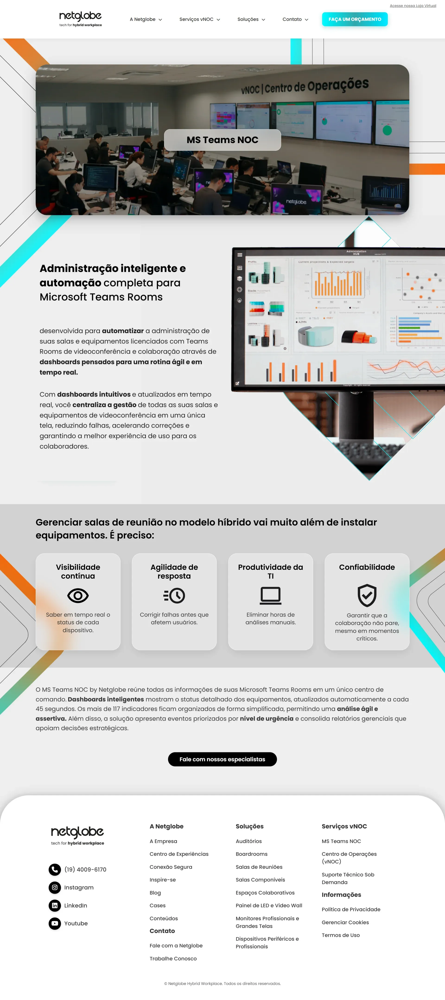
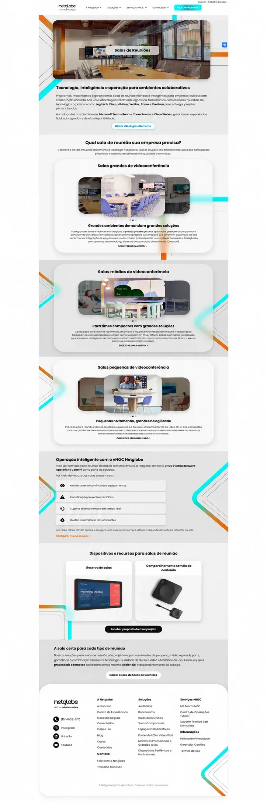
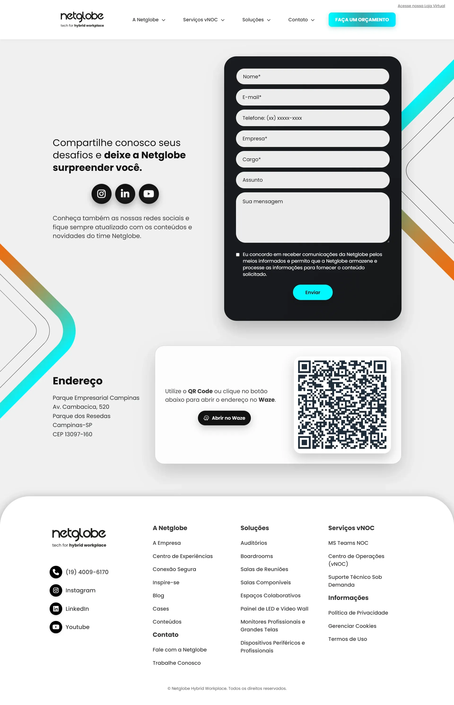
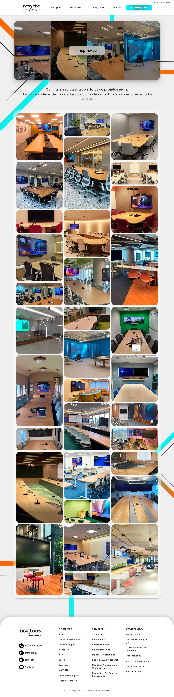
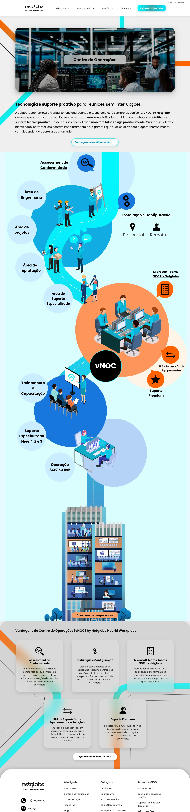